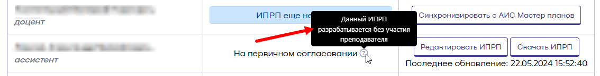

Инструкция заведующего кафедрой¶
Раздел заведующего кафедрой¶
Раздел заведующего кафедрой открывается нажатием соответствующей кнопки в генераторе. При этом открывается страница, содержащая все ИПРП кафедры в различных статусах (рисунок 1).
 Рисунок 1 - Раздел генератора "Заведующий кафедрой"
Рисунок 1 - Раздел генератора "Заведующий кафедрой"
Первичное согласование ИПРП¶
Первичное согласование ИПРП, созданного преподавателем¶
Редактирование ИПРП¶
Титульный лист¶
После того, как преподаватель создал и отправил на согласование свой ИПРП, его статус сменится на "На первичном согласовании". При этом он станет доступен для редактирования и согласования заведующему кафедрой. Для того, чтобы открыть ИПРП необходимо нажать "Редактировать ИПРП". По умолчанию ИПРП открывается на титульном листе (рисунок 2).
 Рисунок 2 - Титульный лист ИПРП
Рисунок 2 - Титульный лист ИПРП
На титульном листе отображается ФИО и кафедра преподавателя, его доля ставки, а также сведения об избрании по конкурсу, прохождении аттестационной комиссии, присвоении учёной степени, учёного звания, повышении квалификации, профессиональной подготовке, которые заполняются преподавателем самостоятельно. Доля ставки может быть изменена вручную. Для этого необходимо нажать кнопку редактирования напротив значения доли ставки и в открывшейся форме скорректировать значение (рисунок 3). После чего нажать "Сохранить".
 Рисунок 3 - Форма редактирования доли ставки
Рисунок 3 - Форма редактирования доли ставки
Для добавления документа необходимо нажать "Прикрепить новый документ". При этом на странице отобразится форма выбора существующих документов (рисунок 4).

Рисунок 4 - Форма выбора существующих документов
Если в списке отсутствует необходимый документ, то добавить его можно, нажав на кнопку "Открыть список моих документов". Откроется форма со списком документов, где необходимо нажать кнопку "Добавить документ" (рисунок 5).
 Рисунок 5 - Форма со списком документов
Рисунок 5 - Форма со списком документов
Нажмите "Добавить документ", чтобы добавить новый документ. Откроется форма добавления нового документа (рисунок 6).

Рисунок 6 - форма добавления нового документа
В форме необходимо выбрать тип документа, дату выдачи/утверждения, а также ввести серию и/или номер документа и нажать "Добавить документ". В результате документ успешно добавится в список документов (рисунок 7).
 Рисунок 7 - Успешно добавленный в список документов документ
Рисунок 7 - Успешно добавленный в список документов документ
Документ можно редактировать и, если он не прикреплен ни к одному из ИПРП, удалить. Нажмите "Закрыть", чтобы документ добавился на титульный лист (рисунок 8).

Рисунок 8 - Добавленный документ
Документ можно открепить, нажав соответствующую кнопку. Открепленный документ будет отображаться в выпадающем списке документов, откуда он может быть прикреплен повторно. Для этого его необходимо выбрать и нажать на кнопку "Прикрепить выбранный документ" (рисунок 9).
 Рисунок 9 - Прикрепление документа
Рисунок 9 - Прикрепление документа
Внимание! На титульном листе отображаются документы не старше 5 лет с даты выдачи и в количестве не более 8 единиц.
Учебная работа¶
Учебная работа может быть отредактирована в соответствии с инструкцией.
Занятия по дисциплинам¶
Раздел "Занятия по дисциплинам" заполняется автоматически и отображается в информационных целях. Заполнять и редактировать этот раздел вручную не нужно.
Методическая работа¶
Методическая работа может быть отредактирована в соответствии с инструкцией.
Научная и воспитательная работы¶
Разделы "Научная работа" и "Воспитательная работа" не содержат предзаполненных типов работ и заполняются вручную по аналогии с методической работой.
Заключение¶
В разделе "Заключение" предлагается либо первично согласовать ИПРП, либо отправить его на доработку (рисунок 10).
 Рисунок 10 - Раздел "Заключение"
Рисунок 10 - Раздел "Заключение"
При возврате на доработку ИПРП будет переведен в статус "Создан" и доступен преподавателю для редактирования и повторной отправке на согласование. При этом, если были внесены правки в ИПРП, то система добавит комментарий, указав в нем блоки, которые были изменены (рисунок 11).

Рисунок 11 - Комментарий системы
При согласовании ИПРП, если были внесены в него изменения, он будет направлен преподавателю на повторное согласование. В этом случае появится модальное окно с указанием разделов, которые были изменены и кнопкой отправки на согласование или отменой (рисунок 12).

Рисунок 12 - Сообщение о внесенных в ИПРП изменениях перед его согласованием
После того, как преподаватель согласует нагрузку ИПРП и направит на очередную итерацию согласования, необходимо нажать "Согласовать" в разделе "Заключение". После чего ввести дату и номер протокола заседания кафедры, на котором был согласован ИПРП (рисунок 13).

Рисунок 13 - Форма заполнения даты и номера протокола заседания кафедры
После нажатия кнопки "Согласовать" статус ИПРП сменится на "Первично согласован". На этом процедура первичного согласования завершается. Вносить в правки в уже заполненные типы работ на этом этапе будет нельзя. Но можно будет добавлять новые и вносить фактические значения в уже созданные типы.
Первичное согласование ИПРП, созданного без участия преподавателя¶
В случае, если преподаватель не участвует в процедуре создания, заполнения и согласования своего ИПРП и заведующего кафедрой имеется доверенность выполнять все процессы от его имени, то ИПРП создается и направляется на согласование ответственным сотрудником кафедры. Тогда в таблице рядом со статусом ИПРП будет иметься отметка о том, что ИПРП разрабатывается без участия преподавателя (рисунок 14).
 Рисунок 14 - ИПРП, разрабатываемый без участи преподавателя
Работа с таким ИПРП осуществляется аналогично работе с ним, когда ИПРП отправлен лично преподавателем, за исключением того. что при возврате на доработку ИПРП будет направлен сотруднику кафедры, который должен будет внести изменения и отправить ИПРП повторно. Также в разделе заключение имеется напоминание о том, что ИПРП разрабатывается без участия преподавателя (рисунок 15).

Рисунок 15 - Раздел "Заключение", когда ИПРП разрабатывается без участия преподавателя
Внимание! В данном случае, если суммарная нагрузка преподавателя будет превышать норму на 10% и более, согласие на выполнение работы сверх установленной нормы за преподавателя подписывает заведующий кафедрой (рисунок 16).
 Рисунок 16 - Согласие на работу сверх установленной нормы
Рисунок 16 - Согласие на работу сверх установленной нормы
Промежуточное согласование ИПРП¶
Процедура промежуточного согласования запускается после промежуточного заполнения ИПРП преподавателем и отправки его на согласование. Сама процедура ничем не отличается от процедуры первичного согласования. Различия только в том, что никаких электронных подписей в файл ИПРП не добавляется.
Финальное согласование ИПРП¶
Финальное согласование ИПРП возможно после его отправки на финальное согласование преподавателем. Сама процедура отличается от промежуточного согласования только тем, что в разделе "Заключение" появился блок "Причина невыполнения плана в полном объеме", а также блок "Заключение". Причину невыполнения заполняет сам преподаватель, а заведующий кафедрой может ее скорректировать. Заключение добавляет сам заведующий кафедрой. Для этого необходимо нажать кнопку "Добавить заключение" (рисунок 17).
 Рисунок 17 - Кнопка "Добавить заключение"
Рисунок 17 - Кнопка "Добавить заключение"
В открывшейся форме ввести заключение и нажать "Сохранить изменения". После этого ИРПП может быть согласован. После финального согласования ИПРП переходит в статус "Финально согласован" и более не доступен для редактирования.